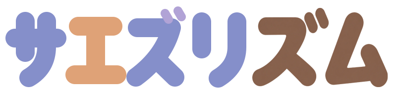

ML-T01／未採用の比較用です。通常の制作画面の作品は端末内に保存します。声は端末内で解析し、波形は解析後に破棄します。
1小節・1拍
8分／16分・休符・小節またぎ・加線の比較用。長音は拍ごとにタイ分割する暫定表示です。
候補なし
全体の音高と長さから調号を推定します。同じ調号の長調・短調は併記します。ボタンで調号を変えても、再生する音は変わりません。
マイクの準備後に1秒待ち、2分音符×2 → 4分音符×4（計8拍）、そのあと4小節を取り込みます。録音の小節頭は高く強いシェーカー、通常拍は低いシェーカーで知らせます。試聴のドンカマ音色は上の設定で選べます。
短いシェーカー音を使い、解析時にその高音域を抑えます。スピーカーからの混入が気になる場合はイヤホンを使うか、カウント音をOFFにしてください。
カウント待ち
カウントから端末内で録り、ドンカマを4回以上確認できたら実測で補正します。まずスピーカー・OS音声処理OFFでお試しください。イヤホンなどで検出できなければ従来の推定補正を使います。音声は保存・送信しません。
ドンカマの実測はまだありません。
音高をならしてから最も近い半音にし、開始・長さを16分単位に丸めます。ドンカマの実測が成功すれば推定補正を置き換えます。追加補正はどちらにも加算します（この端末に保存）。実測の初回比較では追加補正を0にしてください。
「長音を保つ」は揺れをならしながら、短くても安定した別の音は分けます。歌い出しの短い半音ずれは後続の長音へまとめます。「細かい変化も拾う」でも比較できます。「ならし：なし」ではこの抑制もOFFになります。設定は次の取り込みに反映します。
1回の入力から3通りの区切り方を比較します。取り込んだあとで方式を選び、残したい音を確認・編集できます。
比較結果と、ならす前の音程・音量の数値を「記録をコピー」に含めます。音声は保存・送信しません。
前後が同じ音高でも、音量が落ちて発音し直した形跡があれば区切りを残します。無音は補いません。短窓の補助は4096標本・短区間の無音判定で使い、不明だった音高だけを確認します。環境雑音と有声の識別は継続検証中です。
端末内で読み込みます。v12以降の音程推移があれば、同じ入力の3方式を選べます。開くのは元の解析結果です。読み込むと、いま編集中の取り込み候補を置き換えます。
音を選ぶ → 直す → 流れを聴く → まとめてオッケー。点線は仮の変更、茶色は補完候補です。
全体のトランスポーズ（再生する音も変わります）。仮に移調して聴き、オッケーで確定します。
方式ごとに編集を保持します。「10ばん」のように声で番号を指定するか、番号のブロックや音符をタップして直接選べます。選んだ音を譜面の中央に表示します。タイでつながる音符は一つの音として編集します。
音を選んでください
高さは1回で半音ずつ動きます。
音声操作OFF
「たかく／あげる」「ひくく／さげる」「○ばん」「つぎ」「まえ」「さいしょ」「さいご」「きく」「オッケー」「けす」「もどす」「とりけし」。「9ばん けす」と続けても指定できます。最初の利用時は認識モデルを読み込みます。
開始位置1が曲の頭、5が2拍目です。長さ4で4分音符になります。音高は1増減すると半音上下します。
結合は休符を挟まない次の音まで。選んだ音の高さを残します。
機種・イヤホン・聞こえ方は追記してください。下の記録は数値と音符だけです。
まだ計測していません。